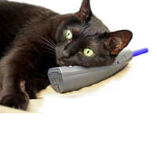

Zen Pet Resources


At Zen Pets, we have collected a wide range of resources to help owners provide a balanced, healthy, and natural life for their pets. Based on our 40 years combined experience in the pet field, our staff constantly monitor and update our resources section. If you have any questions about resources listed here, fill out our Contact Form on our Contact page, call us at 1-800-CAT-N-DOG (1-800-228-6364), or drop by our Sellwood location and mention it to our friendly staff. We're happy to help.
Pet Adoptions
At Zen Pets we believe pet adoption is one of the most important aspects of pet ownership. With literally hundreds of cats and dogs in local shelters, there are numerous opportunities to adopt a healthy cat or dog from local agencies. We have listed some of the most respected and dependable agencies (in no particular order):
- Oregon Humane Society
- Pixie Project - Animal Adoption
- Animal Aid Inc
- Family Dogs New Life Shelter
- Rose City Veterinary Team
- County of Multnomah: Pet Adoption
- Oregon Cat Adoption Center
Veterinary Services
Besides healthy, additive-free foods, and natural pet supplies, nothing will keep your pet balanced and in good health more than regular vet checks. We have compiled a list of the recommended Veterinary clinics and hospitals in the Portland metro area (in no particular order):
- Banfield Pet Hospital
- Rose City Veterinary Hospital
- Mt. Tabor Veterinary Care
- DoveLewis ER & ICU Animal Hospital
- Northwest Veterinary Hospital
- Animal Medical Clinic
- Pet Samaritan Clinic
- Hawthorne Veterinary Clinic
- Pearl Animal Hospital
Pet Breeders
At Zen Pets, we do not sell cats or dogs but we have done our research and can recommend a wide variety of local cat and dog breeders, who use natural, healthy, and nurturing methods of rearing. If a puppy or kitten is provided a stable, healthy, and protected environment, it will grow up centered, balanced, and most likely enjoy long life. Since the list of breeders is long and encompasses a wide variety of breeds, please fill out our Contact Form on our Contact page, call us at 1-800-CAT-N-DOG (1-800-228-6364), or drop by our Sellwood location and mention it to our friendly staff. We're happy to help.
Training Cats and Dogs
Though unusual, training cats is a trend which continues. Along with a recommended list of dog trainers, we have provided a list of trainers we feel represent good techniques and use positive reinforcement to achieve training goals. Trainers are listed in no particular order.